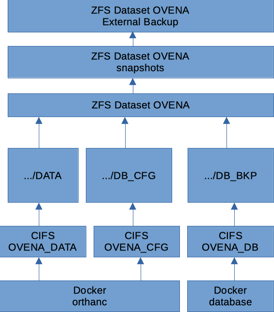

Backup and Restore¶
Procedure to properly backup and restore the VNA.
Use the /usr/local/bin/ovena script to perform backup and restore functions of the PostgreSQL Database dump.
Backups and restores are done from inside the docker container, inside the folder /mnt/backup which is mounted by docker-compose to a CIFS share of your choosing.
We use ZFS for our datastore, and share it over CIFS. A single ZFS dataset will contain the live binary files (images), the DB dump and the orthanc configuration files.
Mounting the CIFS with docker directly inside the container, and skipping the host was chosen for the following reasons:
docker guarantees mounting and unmounting of the CIFS share.
docker will not start up the service if the CIFS mount doesn’t work. This guarantees that orthanc will not accidentally start saving images on to local, unbacked up and orphaned directory.
less configuration and setup required (all in docker-compose.yml, instead of
/etc/fstabplus some kind of logic to make sure docker doesn’t start the container, if volume is not mounted.)reduced risk for the host messing up the data, because the volumes are actually mounted deep in the
/var/lib/dockerdirectory structure.
Database Backup¶
During installation, you will have configured two CIFS shares which Ovena will use: one to store the actual Image data (large binary data), the other will be used to store the DB dumps.
The /usr/local/bin/ovena –file=FILENAME backup script is used to create a DB dump. If you omit the
--fileparameter, ovena will useovena-db-backup.sql. Pick a filename with the.sqlextension. Relative and absolute paths are not supported. Just a single filename.The backup script will dump into the provided filename, and then compress it with
gzip.
Note
Ovena comes with a pre-configured hourly cron job to run the /usr/local/bin/ovena backup command. There is a wrapper script in /etc/cron.hourly. Moving it from that folder to /etc/cron.daily or /etc/cron.weekly will make ovena do backups only once a day or once a week respectively. This is all standard Debian/UNIX cron jobs.
Images binary files Backup¶
Backup the image directory contents of the storage folder, the way you prefer. The folder will grow large, so it could be a good idea to have it network mounted on a NAS, which is then properly snapshotted and backed up.
As shown in the diagram above, we have our NAS on an hourly snapshots schedule, and then we also back up the entire dataset to another external system.
We choose not to package all image files into a single, say .tar archive, because this would become very large.
Restore¶
Set up the CIFS share on your NAS, in one of them there will be the entire images binary files, in the other the DB dump.
Configure the
/etc/ovena/docker-compose.ymlwith the proper CIFS credentials.- Restore Database
ovena --file=<backup filename> restore
This step will shut down the containers, destroy the current database configuration files, bring up the database container (which will recreate a fresh database configuration), and restore the dump.
Restore Image files by putting in the CIFS share the restored image files.
- Start up ovena services:
ovena start